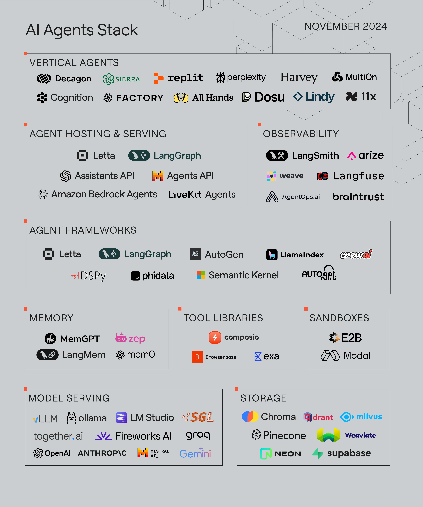

2 智能体发展史
2.1 基于符号与逻辑的早期智能体
在深度学习出现之前，人工智能主要依赖符号表示（symbolic representation）+ 形式逻辑推理（formal logic reasoning）来构建“智能体”。
“智能体”这个词，早期更多叫 symbolic AI systems / expert systems / rule-based systems，不一定都以“agent”形态出现（比如没有环境交互、没有规划 loop）。当时更多是规则系统/专家系统，今天也常被归入早期 agent 的谱系。
它属于 AI 发展史中的早期主导范式之一，通常被称为符号主义 AI（Symbolic AI），也常被戏称为Good Old-Fashioned AI（GOFAI）
- Human(Socrates)
- ∀x (Human(x) → Mortal(x))
- ∴ Mortal(Socrates)
这就是符号主义怎么运作的，逻辑演绎。苏格拉底是人，人都会死，苏格拉底会死。系统通过推理引擎（inference engine），一步步推出结论。
所以很好理解，这个时候用用符号表示世界，并通过逻辑规则一步步推导出结论。
符号主义 AI 认为只要我们把知识写成足够完整的逻辑规则，机器就可以像数学证明一样推导出答案。在这种AI的身上，规则是确定的，推理是可证明的，智能是逻辑运算。它理论主张认为只要我们把世界写成符号规则，机器就能产生智能。
这个时代的智能体，其“智慧”主要来源于设计者预先编码的知识与规则，而非通过自主学习获得。
举个例子：
IF 发烧 AND 白细胞升高
THEN 可能是细菌感染你输入症状，系统按规则匹配。
我有个困惑，你这个符号系统AI，到底是不是一堆的if else语句？
符号主义 AI 内部通常就是三样东西： 一个知识库（规则库+事实库）、一个推理引擎（算法）、一个循环（不停推导）
在机器层面，它本质就是条件判断、状态更新、循环。与普通程序不同之处在于，规则通常以数据形式存储，并由通用推理机制操作。
规则预先写好，用户输入事实，系统根据规则返回判断。
物理符号系统假说是哲学基础， 专家系统和 SHRDLU 是它的实践结果。
2.1.1 物理符号系统假说
The Physical Symbol System Hypothesis (PSSH), formulated by Allen Newell and Herbert A. Simon, proposes that a physical symbol system—a machine that manipulates symbols representing information—has the necessary and sufficient means for general intelligent action.
它到底在说什么？
这不仅是在说“符号系统可以实现智能”，而是在说“任何智能系统本质上都必须是符号系统”。这是理论上最激进的地方。
“physical”指的是在真实物理机器中实现的符号系统。
Newell 和 Simon 的假说包含两个断言：
充分性（Sufficient）：如果一个系统是物理符号系统 → 它可以实现一般智能。
必要性（Necessary）：PSSH 提出了强形式主张，认为符号操作不仅足以，而且是实现一般智能的必要条件。该观点在后续认知科学与联结主义发展中受到广泛争议。
物理符号系统拥有实现一般智能行为的充分且必要的“手段”（means）。翻成人话就是只要一个系统能够存储和操作符号结构，它就可以实现智能。
符号是用来代表某个东西的离散标记。比如“人”、“张三”、“红色”、Human(x)、Mortal(Socrates)
这些都不是现实本身，它们是对现实的表示。
在计算机里就是字符串、变量。
简而言之，PSSH大胆地宣称：智能的本质，就是符号的计算与处理。
2.1.2 专家系统
你大概知道符号主义AI跟条件判断有点关系，就先简单理解成它就是比较高级的if else。
一个典型的专家系统通常由知识库（Knowledge Base）、推理引擎（Inference Engine）、解释系统（Explanation Facility）、用户界面（User Interface）等几个核心部分构成。
专家系统假设：专家的能力主要来自“显式知识 + 规则推理”。
2.1.2.1 经典例子
- MYCIN
领域：血液感染诊断
使用约 600 条规则
使用后向推理
在特定场景下接近医生水平
在实验评估中，其诊断建议质量在特定测试场景下接近专家水平（它从未在真实临床大规模部署）。
- DENDRAL
领域：有机化学结构分析
通过规则生成分子结构假设
2.1.3 SHRDLU
SHRDLU 是 1970 年由 Terry Winograd 在 MIT 开发的自然语言理解系统。它运行在一个极其受限的“方块世界（Blocks World）”中。世界里只有方块、圆锥、桌面、堆叠关系。
用户可以输入英文指令，例如：
Put the red block on the green cube. Is there anything which is bigger than every pyramid but is not as wide as the thing that supports it?
SHRDLU 能解析语法、解析指代（it / the one）、执行动作、进行逻辑推理、回答问题。
在 1970 年，这几乎是“魔法”。
然而，SHRDLU 有致命的限制。它的世界极度封闭，它只在 Blocks World 中有效。一旦脱离这个微型世界，它立即失效。
而且所有知识是手写的世界规则、物理规则、语法规则、逻辑规则全部人工构造，无法扩展。
它的语义依赖完全精确的符号映射，而现实世界是模糊的。Blocks World 是完美离散的，这不是同一个问题。
SHRDLU 是符号主义 AI 的巅峰展示。它证明在封闭、结构化世界中符号系统可以表现出强大的语言能力。但它也暴露了符号系统对真实世界的扩展极其困难。
2.1.4 符号主义面临的根本性挑战
符号主义的基本结构是现实 → 离散符号表示 → 规则操作 → 结论。
问题出在“现实 → 符号”这一步。在 Blocks World 里，物体数量有限，属性有限，关系也有限，而现实世界呢，实体无数，关系无数，属性不知道有多少，用规则覆盖现实不太可能，非要做的话规则数量指数增长，这就是“组合爆炸”。
严格来说，并非数学证明的指数增长，而是“组合复杂度爆炸”这一类比。
其次呢，现实理解依赖海量默认知识。例如“把杯子放在桌子上”，这简单一句话隐含的前提就有杯子是可移动的、桌子能承重、重力存在、桌子在地面上……这些常识无法完全穷举写出。这被称为常识知识工程问题。
“知识工程”是计算机科学的一个分支领域，它主要研究如何将人类的知识进行有效的表示、获取、管理和应用。
还有一个，框架问题（Frame Problem），这是更深层的理论问题。
当一个动作发生时，哪些事实改变？哪些事实保持不变？例如“把红色方块移动到桌子上”，改变了方块的位置，没改变它的颜色、形状、其他物体状态。但系统如何知道哪些“不变”？如果每次都显式写颜色不变、材质不变、重量不变……规则会爆炸。这就是 Frame Problem。
“Frame Problem”是人工智能领域的一个经典问题。它指的是在人工智能系统中，当一个事件发生时，如何确定该事件对其他事物的影响范围，以及如何高效地更新系统对世界状态的认知。
例如，在一个机器人所在的环境中，机器人拿起一个物体，这个动作会改变物体的位置状态，但同时系统也需要考虑这个动作是否会对周围其他物体或者环境因素产生影响，以及如何更新对整个场景的认知。如果简单地认为所有其他事物的状态都未改变，可能会忽略一些重要的连锁反应；但如果过度更新，又会导致计算资源的浪费。Frame Problem就是关于如何在这些之间找到平衡，准确且高效地处理状态更新的问题。
符号主义假设世界已经被正确离散化为符号。但现实中感知是连续的、模糊的。如何从视觉、声音中抽取离散符号？这是符号主义几乎无法解决的。
2.2 构建基于规则的聊天机器人
复现ELIZA，一个实战
2.2.1 ELIZA 的设计思想
2.2.2 模式匹配与文本替换
2.2.3 核心逻辑的实现
2.3 马文·明斯基的心智社会
《心智社会》（1986）是 Marvin Minsky 提出的一种认知理论。它的核心观点是：心智不是一个统一的东西，而是大量简单“代理”（agents）的社会。
这些 agent 不是今天的大模型 agent，它们是极简单的功能模块，每个 agent 能做的事情很有限。
智能不是一个“大脑核心模块”，而是很多小机制之间的组织结果。
它隐含地反对两种思路单一智能机制、纯符号主义的中心控制模型。
它诞生在一个关键时刻：1970s–1980s符号主义出现问题，SHRDLU 等系统难以扩展。
Minsky提出，问题可能不是规则数量不够，而是结构组织方式错了。他想解决的问题是，如何从简单机制涌现出复杂智能？
Minsky 本身属于符号主义阵营。但《心智社会》做了一次内部修正，从“规则系统”转向“多机制组织系统”，它不是放弃符号，而是改变组织方式。
它没有工程实现，更像一个思维框架，因为它提出两个非常现代的思想：
- 智能可能是多模块并行
- 高层控制可能是低层机制的涌现
今天的多模块架构、Mixture-of-Experts、多 Agent 系统都能看到它的影子。
2.3.1 对单一整体智能模型的反思
早期人工智能研究，尤其是在符号主义阶段，隐含一个假设：智能是一个统一的、中心化的机制。
无论是逻辑推理系统，还是专家系统，结构上都倾向于一个知识库、一个推理引擎、一个控制核心。
这是一种“中央处理器式”的心智模型。但现实认知现象并不支持这种统一性假设。
人类思维表现出冲突（理性与情绪）、迟滞（知道却做不到）、多重目标竞争、局部策略优先级切换。
如果存在一个完备、统一、全知的中心推理器，这些现象很难解释。
《心智社会》提出的反思是：也许我们错误地把“系统一致性”当成“认知真实结构”。
智能表现出协调性，并不意味着它内部是统一的。
类似于一个国家表面上有决策，实际上是多部门博弈的结果。
Minsky 的挑战在于把“智能是一个整体”改写为“整体只是表象”。这是一种结构上的去中心化。
2.3.2 作为协作体的智能
如果否定单一中心机制，那么替代模型是什么？《心智社会》的回答是：智能是大量简单机制之间的协作与竞争结构。
这里的“agent”并不是完整理性个体。它们可能极其简单。单个 agent 没有“智能”。但当这些 agent 以层级和网络形式组织起来时，智能就出现了。它成为一种“组织现象”。关键点在于它没有全局全知，没有统一意志，没有单一逻辑核心。
2.3.3 对多智能体系统的理论启发
The Society of Mind提出的核心观点是：所谓“智能”，并非来自一个统一、全能的中心，而是源于大量简单机制之间的协同运作。每个“代理”（agent）本身能力有限，但通过组织结构与交互关系，可以形成更高层级的智能行为。
这一思想为后来的Distributed Artificial Intelligence（DAI）与Multi-Agent Systems（MAS）提供了重要的概念启发。其理论影响主要体现在以下几个方面。
- 去中心化控制（Decentralized Control）
- 涌现与结构层级（Emergence and Hierarchy）
- 智能体的社会属性（Agent Sociality）
- 研究范式的转向
2.4 学习范式的演进与现代智能体
在“心智社会”所开启的分布式智能视角之后，人工智能研究逐渐面临一个更为根本的问题：
如果智能不是一个可以完全手工设计的规则体系，那么它是否必须通过学习获得？
早期符号主义依赖专家编码知识库与逻辑推理机制，其优势在于结构清晰、可解释性强，但在真实世界的不确定性、噪声与规模复杂性面前逐渐显露局限。系统越复杂，规则维护成本越高，泛化能力越弱。这一困境促使研究重心从“知识表示”转向“知识获取”。
由此，人工智能进入以“学习”为核心的范式演进阶段。
2.4.1 从符号到联结
符号主义将智能视为规则系统；联结主义则将智能视为可训练结构。在联结主义（Connectionism）框架下，知识不再以符号形式存储，而是分布在网络参数之中。学习过程通过调整连接权重，使系统逐渐形成稳定的映射能力。
这一转向意味着：智能不再等于逻辑推理，智能等于参数空间中的函数近似。符号主义强调“知识表示”，联结主义强调“知识获得”。
这为后续一切学习方法奠定了基础——智能可以通过优化过程产生。
但这一阶段的学习主要解决的是“感知映射”问题。系统可以识别图像、理解语音、处理文本，却仍然缺乏在环境中行动的能力。
2.4.2 基于强化学习的智能体
如果联结主义解决的是“如何表示世界”，那么强化学习（Reinforcement Learning）解决的是“如何在世界中行动”。强化学习将智能形式化为一个闭环结构：智能体、环境、状态、行动、奖励。
智能的目标从“最小化误差”转变为“最大化长期回报”。这一阶段的重要意义在于引入了序贯决策、长期规划、环境交互。
智能开始被定义为“策略优化能力”。例如AlphaGo通过自我对弈不断更新策略，在并非通过人工书写棋局策略规则的前提下获得超越人类水平的决策能力。然而，强化学习通常依赖特定任务环境。智能体在开始时缺乏广泛的背景知识，需要大量交互才能形成有效策略。这暴露出新的问题：能否在行动之前，就让智能体具备对世界的广泛理解？
符号主义、联结主义、行为主义，这三个是“智能观”的层面，是关于“智能是什么”的立场。
思想层：符号主义、联结主义、行为主义。
方法层：逻辑推理系统、神经网络、强化学习算法。
工程层：具体系统，比如MYCIN、AlphaGo、GPT。
2.4.3 基于大规模数据的预训练
预训练范式的提出改变了模型学习的起点。在预训练—微调框架下，模型首先在海量数据上进行自监督学习，获得对语言和世界结构的广泛表示能力，然后再针对具体任务进行适配。这一范式带来了两个关键变化：
- 模型不再从零开始学习
- 知识被编码为高维参数中的隐式结构
当模型规模达到一定阈值时，开始出现涌现能力，例如：
- 上下文学习
- 零样本迁移
- 多步推理
大型语言模型由此成为“通用表示平台”，而不仅仅是单一任务模型。此时，智能的定义进一步扩展，不仅能感知，还能迁移，并在一定程度上推理。但模型仍然只是一个预测器。它缺乏主动结构和持续行动能力。
2.4.4 基于大语言模型的智能体
现代智能体的出现，标志着学习范式进入结构整合阶段。在这一阶段，大语言模型（LLM）不再只是文本生成器，而是被嵌入一个完整的行为循环中。以OpenAI推出的GPT-4等模型为代表，LLM成为认知核心，典型的现代 LLM Agent 架构通常包含：
- 感知模块
- 记忆模块
- 规划模块
- 工具调用接口
- 执行模块
智能体的工作方式可以抽象为一个持续迭代的闭环：感知 → 思考 → 行动 → 反馈 → 更新
与强化学习的差异在于，它的推理能力来自预训练知识，工具调用扩展了外部能力，记忆机制增强长期一致性。智能不再只是策略优化，而是在复杂环境中持续运行的结构化行为系统。
2.4.5 智能体发展关键节点概览
| 阶段 | 智能核心 | 关键问题 |
|---|---|---|
| 符号主义 | 规则推理 | 如何表达知识 |
| 联结主义 | 参数学习 | 如何获得表示 |
| 强化学习（行为主义） | 策略优化 | 如何在环境中决策 |
| 预训练模型 | 通用知识 | 如何跨任务泛化 |
| LLM智能体 | 结构整合 | 如何形成持续行为 |
从宏观角度看，这是一条三次跃迁的路径：
- 从“设计规则”到“优化参数”
- 从“静态预测”到“动态决策”
- 从“单一模型”到“系统结构”
理解AI agents的格局
Although we see a lot of agent stack and agent market maps, we tend to disagree with their categorizations, and find they rarely reflect what we observe actually being used by developers. The agent software ecosystem has developed significantly in the past few months with progress in memory, tool usage, secure execution, and deployment, so we decided it was time to share our own “agent stack” based on our own learnings from working on open source AI for over a year and AI research for 7+ years.

The AI agents stack in late 2024, organized into three key layers: agent hosting/serving, agent frameworks, and LLM models & storage.
2.5 本章小结
这一章整体讲的是智能体范式如何一步步演化，而不是简单的技术时间线。最早的人工智能主要建立在符号主义之上，认为只要把世界用离散符号表示清楚，并用逻辑规则进行推理，机器就可以实现智能。这个阶段的系统通常包含知识库、推理引擎和控制循环，典型代表包括专家系统如 MYCIN 和 DENDRAL，以及自然语言系统 SHRDLU。它们在封闭、结构清晰的环境中表现出很强能力，但在现实世界中遇到严重扩展问题，例如组合复杂度爆炸、常识知识难以穷举以及框架问题等。物理符号系统假说则为这一阶段提供了理论基础，主张符号操作是实现一般智能的充分且必要条件，但这一立场后来受到挑战。
随着符号系统难以扩展，研究逐渐转向学习范式。联结主义认为智能不是规则推理，而是通过参数训练获得的函数近似，知识分布在网络权重之中。强化学习进一步引入环境交互与长期回报优化，使智能被重新定义为策略优化能力。预训练模型的出现则改变了学习起点，使模型通过大规模自监督训练获得广泛表示能力，并在规模扩大后展现出跨任务迁移与推理能力。最终，大语言模型被嵌入完整结构中形成现代智能体系统，不再只是预测器，而是通过感知、记忆、规划、工具调用和执行模块形成持续闭环行为。
从宏观来看，这一发展经历了三次重要跃迁：从人工设计规则到通过优化学习参数，从静态预测到动态决策，从单一模型到系统级结构整合。整条路径反映的核心不是单一技术替代，而是智能结构组织方式的变化，即从中心化逻辑核心逐渐演化为多模块协作的复杂系统。
2.6 本章代码
这一章的代码就这些。它定义一个规则列表，列表里面的key是用来匹配的表达式。
用户输入内容，然后用re包以及这些key进行比对，最后选中一个规则，从规则对应的value列表里面随机选择一个回复。
它还进行了一些词汇的替换。
import re
import random
# 定义规则库:模式(正则表达式) -> 响应模板列表
rules = {
r'I need (.*)': [
"Why do you need {0}?",
"Would it really help you to get {0}?",
"Are you sure you need {0}?"
],
r'Why don\'t you (.*)\?': [
"Do you really think I don't {0}?",
"Perhaps eventually I will {0}.",
"Do you really want me to {0}?"
],
r'Why can\'t I (.*)\?': [
"Do you think you should be able to {0}?",
"If you could {0}, what would you do?",
"I don't know -- why can't you {0}?"
],
r'I am (.*)': [
"Did you come to me because you are {0}?",
"How long have you been {0}?",
"How do you feel about being {0}?"
],
r'.* mother .*': [
"Tell me more about your mother.",
"What was your relationship with your mother like?",
"How do you feel about your mother?"
],
r'.* father .*': [
"Tell me more about your father.",
"How did your father make you feel?",
"What has your father taught you?"
],
r'.*': [
"Please tell me more.",
"Let's change focus a bit... Tell me about your family.",
"Can you elaborate on that?"
]
}
# 定义代词转换规则
pronoun_swap = {
"i": "you", "you": "i", "me": "you", "my": "your",
"am": "are", "are": "am", "was": "were", "i'd": "you would",
"i've": "you have", "i'll": "you will", "yours": "mine",
"mine": "yours"
}
def swap_pronouns(phrase):
"""
对输入短语中的代词进行第一/第二人称转换
"""
words = phrase.lower().split()
swapped_words = [pronoun_swap.get(word, word) for word in words]
return " ".join(swapped_words)
def respond(user_input):
"""
根据规则库生成响应
"""
for pattern, responses in rules.items():
match = re.search(pattern, user_input, re.IGNORECASE)
if match:
# 捕获匹配到的部分
captured_group = match.group(1) if match.groups() else ''
print('captured_group:',captured_group)
# 进行代词转换
swapped_group = swap_pronouns(captured_group)
print('captured_group:',captured_group)
# 从模板中随机选择一个并格式化
response = random.choice(responses).format(swapped_group)
return response
# 如果没有匹配任何特定规则，使用最后的通配符规则
return random.choice(rules[r'.*'])
# 主聊天循环
if __name__ == '__main__':
print("Therapist: Hello! How can I help you today?")
while True:
user_input = input("You: ")
if user_input.lower() in ["quit", "exit", "bye"]:
print("Therapist: Goodbye. It was nice talking to you.")
break
response = respond(user_input)
print(f"Therapist: {response}")